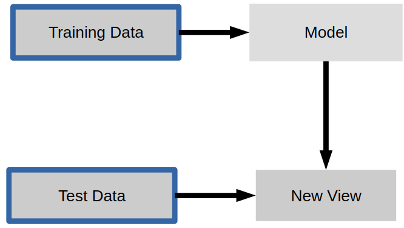
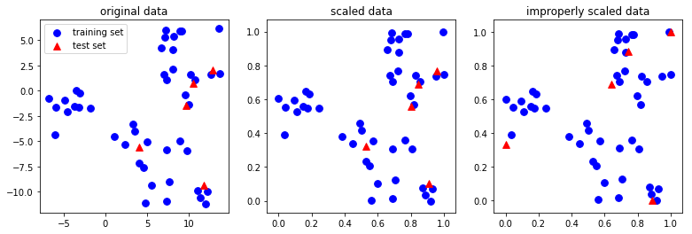
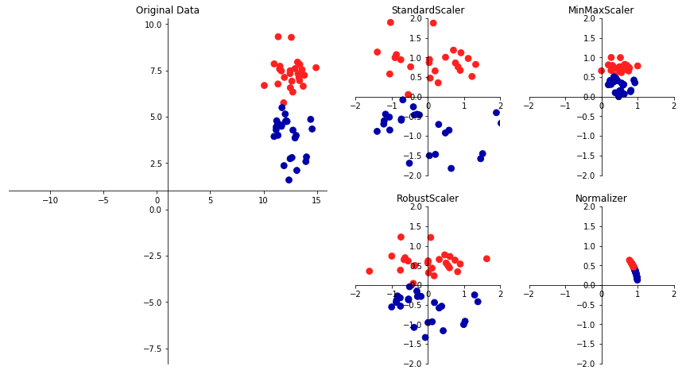
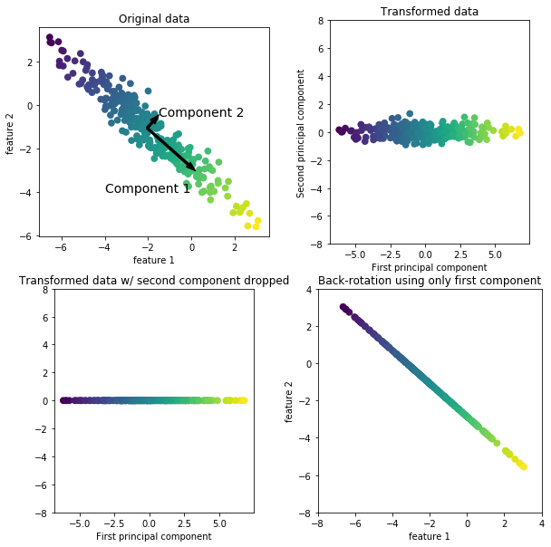
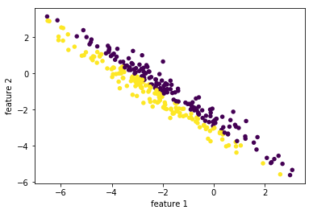
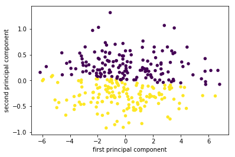
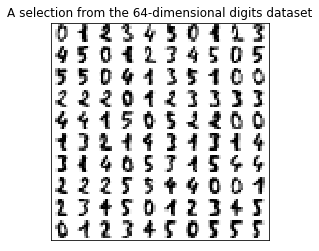
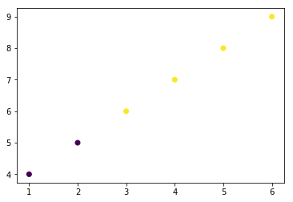
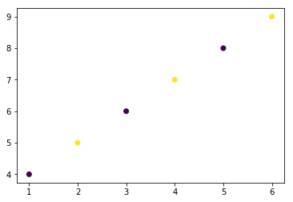

scikit-笔记06:非监督学习之特征转换
Table of Contents
%matplotlib inline import matplotlib.pyplot as plt import numpy as np
1 Unsupervised Learning Part 1 – Transformation
1.1 instances of unsupervised learning
Many instances of unsupervised learning, such as
- dimensionality reduction,
- manifold learning,
- feature extraction,
find a new representation of the input data without any additional input.

1.2 data preprocessing: standardization
1.2.1 what is a standardization in data preprocessing
A very basic example is the rescaling of our data, which is a requirement for
many machine learning algorithms as they are not scale-invariant – rescaling
falls into the category of data pre-processing and can barely be called
learning. There exist many different rescaling techniques, and in the following
example, we will take a look at a particular method that is commonly called
"standardization."
STANDARDIZATION:
we will recale the data so that each feature is centered at zero (
mean = 0) with unit variance (standard deviation = 1).For example, if we have a 1D dataset with the values [1, 2, 3, 4, 5], the standardized values are
1 -> -1.41 2 -> -0.71 3 -> 0.0 4 -> 0.71 5 -> 1.41
computed via the equation \(x_{standardized} = \frac{x - \mu_x}{\sigma_x}\) , where μ is the sample mean, and σ the standard deviation, respectively.
1.2.2 ordinary way of standardization
ary = np.array([1, 2, 3, 4, 5]) ary_standardized = (ary - ary.mean()) / ary.std() ary_standardized, ary_standardized.mean(), ary_standardized.std()
(array([-1.41421356, -0.70710678, 0. , 0.70710678, 1.41421356]), 0.0, 0.99999999999999989)
1.3 intro to sklearn.preprocessing.StandardScaler class
Although standardization is a most basic preprocessing procedure – as we've
seen in the code snipped above – scikit-learn implements a StandardScaler class
for this computation. And in later sections, we will see why and when the
scikit-learn interface comes in handy over the code snippet we executed above.
1.3.1 same API with ML model
Applying such a preprocessing has a very similar interface to the supervised
learning algorithms we saw so far. To get some more practice with scikit-learn's
"Transformer" interface, let's start by loading the iris dataset and rescale it:
from sklearn.datasets import load_iris from sklearn.model_selection import train_test_split iris = load_iris() #<- return a Bunch obj, essentially a dict X_train, X_test, y_train, y_test = train_test_split(iris.data, iris.target, random_state=0) print(X_train.shape)
The iris dataset is not "centered" that is it has non-zero mean and the standard deviation is different for each component:
print("mean : %s " % X_train.mean(axis=0)) print("standard deviation : %s " % X_train.std(axis=0))
1.3.2 creating
To use a preprocessing method, we first import the estimator, here StandardScaler and instantiate it:
from sklearn.preprocessing import StandardScaler scaler = StandardScaler()
1.3.3 fitting
scaler.fit(X_train)
StandardScaler(copy=True, with_mean=True, with_std=True)
1.3.4 transformation
Now we can rescale our data by applying the transform (not predict) method:
X_train_scaled = scaler.transform(X_train) #<- get a ndarray
X_train_scaled has the same number of samples and features, but the mean was subtracted and all features were scaled to have unit standard deviation:
print(X_train_scaled.shape) print("mean : %s " % X_train_scaled.mean(axis=0)) # <- axis = 0 means accumulating vertically print("standard deviation : %s " % X_train_scaled.std(axis=0))
To summarize:
Via the fit method, the estimator is fitted to the data we provide. In this
step, the estimator estimates the parameters from the data (here: mean and
standard deviation).
Then, if we transform data, these parameters are used to transform a dataset.
(Please note that the transform method does not update these parameters).
1.3.5 training/testing data should transform in the same way
It's important to note that the same transformation is applied to the training and the test set. That has the consequence that usually the mean of the test data is not zero after scaling:
X_test_scaled = scaler.transform(X_test) print("mean test data: %s" % X_test_scaled.mean(axis=0))
It is important for the training and test data to be transformed in exactly the same way, for the following processing steps to make sense of the data, as is illustrated in the figure below:
from figures import plot_relative_scaling plot_relative_scaling()

1.3.6 other data preprocessing
- StandardScaler
- MinMaxScaler
- etc.
There are several common ways to scale the data. The most common one is the
StandardScaler we just introduced, but rescaling the data to a fix minimum an
maximum value with MinMaxScaler (usually between 0 and 1), or using more robust
statistics like median and quantile, instead of mean and standard deviation
(with RobustScaler), are also useful.
from figures import plot_scaling plot_scaling()

1.3.7 compare API of ML model with API of standardization
As with the classification and regression algorithms, we call fit to learn the
model from the data. As this is an unsupervised model, we only pass X, not y.
This simply estimates mean and standard deviation.
X: training dataset; y: training datset labels; new_X: testing dataset or new data
For
prediction model:
- create:
estimator = [estimator](), eg: estimator = LinearRegression, LogisticRegression, etc- fitting: supervised model :
[estimator].fit(X,y)unsupervised model :[estimator].fit(X)- predict:
[estimator].predict(new_X)For
standardization model:
- create:
scaler = StandardScaler()- fitting:
scaler.fit(X)- transformation:
scaler.transform(X)
1.4 PCA
1.4.1 target of PCA: dimension reduce
An unsupervised transformation that is somewhat more interesting is Principal Component Analysis (PCA). It is a technique to reduce the dimensionality of the data, by creating a:
1.4.2 essential of PCA: rotating to new direction
linear projection.
That is, we find new features to represent the data that are a linear combination of the old data (i.e. we rotate it).
Thus, we can think of PCA as a projection of our data onto a new feature space.
1.4.3 recipe of PCA:
The way PCA finds these new directions is by looking for the directions of maximum variance. Usually only few components that explain most of the variance in the data are kept.
Here, the premise is to reduce the size (dimensionality) of a dataset while capturing most of its information. There are many reason why dimensionality reduction can be useful:
- It can reduce the computational cost when running learning algorithms,
- decrease the storage space,
- may help with the so-called "curse of dimensionality".
To illustrate how a rotation might look like, we first show it on two-dimensional data and keep both principal components. Here is an illustration:
from figures import plot_pca_illustration plot_pca_illustration()

1.4.3.1 generate data points:
a rotated Gaussian data points by linear transformation on original data points. Now let's go through all the steps in more detail: We create a Gaussian blob that is rotated:
rnd = np.random.RandomState(5) X_ = rnd.normal(size=(300, 2)) ''' (300,2) dot (2,2) + (2,) = (300,2) points . Matrix + vector ===> rotated points | (x,y) | (x,y) | (x,y) | (x,y) | (x,y) (300,2)| (x,y) 300 points * Matrix + vector | (x,y) of original -----> linear combination = points of rotated | (x,y) axes (linear transformation) axes | ... | (x,y) | (x,y) ''' X_blob = np.dot(X_, rnd.normal(size=(2, 2))) + rnd.normal(size=2) y = X_[:, 0] > 0 # create a array of boolean as condition of color plt.scatter(X_blob[:, 0], X_blob[:, 1], c=y, # pass an array of boolean will give different color # to different condition-satisfied points. linewidths=0, s=30) plt.xlabel("feature 1") plt.ylabel("feature 2");

1.4.3.2 creating
As always, we instantiate our PCA model. By default all directions are kept.
from sklearn.decomposition import PCA # n_components : int, float, None or string # Number of components to keep. if n_components is not set all components are kept pca = PCA() # pca = PCA(n_components=1)
1.4.3.3 fitting
Then we fit the PCA model with our data. As PCA is an unsupervised algorithm, there is no output y.
pca.fit(X_blob)
print(X_blob.shape)
1.4.3.4 transformation
pca.transform(X_blob) will find the best(2nd best, 3rd best, 4th best,
etc) direction along which data points(of original axes) will have the
max(2nd max, 3rd max, 4th max, etc) variance. The number of directions pca
will keep specify by the parameter of pca: n_components
#<- projection all data points to one line pca = PCA(n_components=1).fit(X_blob) #<- projection all data points to one plane # with two axes are the best and 2nd best direction found by pca pca = PCA(n_components=2).fit(X_blob)
Note that, shape of X_blob will change to (300,1) after execute this src-block, you should rerun two src-block above before rerun this one.
X_pca = pca.transform(X_blob) plt.scatter(X_pca[:, 0], X_pca[:, 1], c=y, linewidths=0, s=30) plt.xlabel("first principal component") plt.ylabel("second principal component"); # n_components : int, float, None or string # Number of components to keep. if n_components is not set all components are kept pca = PCA(n_components=1).fit(X_blob) X_blob.shape, pca.transform(X_blob).shape
((300, 2), (300, 1))

On the left of the plot you can see the four points that were on the top right before. PCA found fit first component to be along the diagonal, and the second to be perpendicular to it. As PCA finds a rotation, the principal components are always at right angles ("orthogonal") to each other.
1.5 Dimensionality Reduction for Visualization with PCA
Consider the digits dataset. It cannot be visualized in a single 2D plot, as it has 64 features(dimensions). We are going to extract 2 features(dimensions) to visualize it in, using the example from the sklearn examples here
from figures import digits_plot digits_plot()

Note that this projection was determined without any information about the labels (represented by the colors): this is the sense in which the learning is unsupervised. Nevertheless, we see that the projection gives us insight into the distribution of the different digits in parameter space.
2 EXERCISE
EXERCISE: Visualize the iris dataset using the first two principal components, and compare this visualization to using two of the original features.
3 Misc tools
3.1 Scikit-learn
3.1.1 ML models by now
- from sklearn.datasets import make_blobs
- from sklearn.datasets import load_iris
- from sklearn.model_selection import train_test_split
- from sklearn.linear_model import LogisticRegression
- from sklearn.linear_model import LinearRegression
- from sklearn.neighbors import KNeighborsClassifier
- from sklearn.neighbors import KNeighborsRegressor
- from sklearn.preprocessing import StandardScaler
- from sklearn.decomposition import PCA
3.1.2 ML fn by this note
plt.scatter(X_blob[:, 0], X_blob[:, 1], c=y, # pass an array of boolean will give different color # to different condition-satisfied points. linewidths=0, s=30)
from sklearn.decomposition import PCA pca = PCA(n_components=2)
pca.fit(X_blob)
X_pca = pca.transform(X_blob)
plt.scatter(X_pca[:, 0], X_pca[:, 1])
3.2 Matplotlib
3.2.1 plot function with parameter c = array of boolean/01
Give different colors for data points who satisfy different conditions.
import matplotlib.pyplot as plt import numpy as np X = np.array([1,2,3,4,5,6]) y = np.array([4,5,6,7,8,9]) plt.scatter(X,y,c=y>5) # <- here pass an array of boolean to 'c' --- color parameter plt.show()

import matplotlib.pyplot as plt import numpy as np X = np.array([1,2,3,4,5,6]) y = np.array([4,5,6,7,8,9]) plt.scatter(X,y,c=y%2) # <- here pass an array of '01' to 'c' --- color parameter plt.show()
